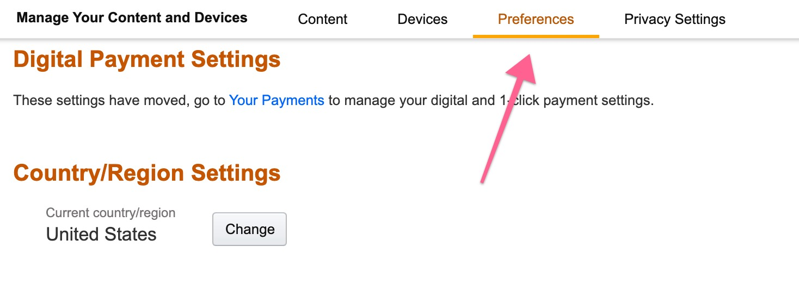
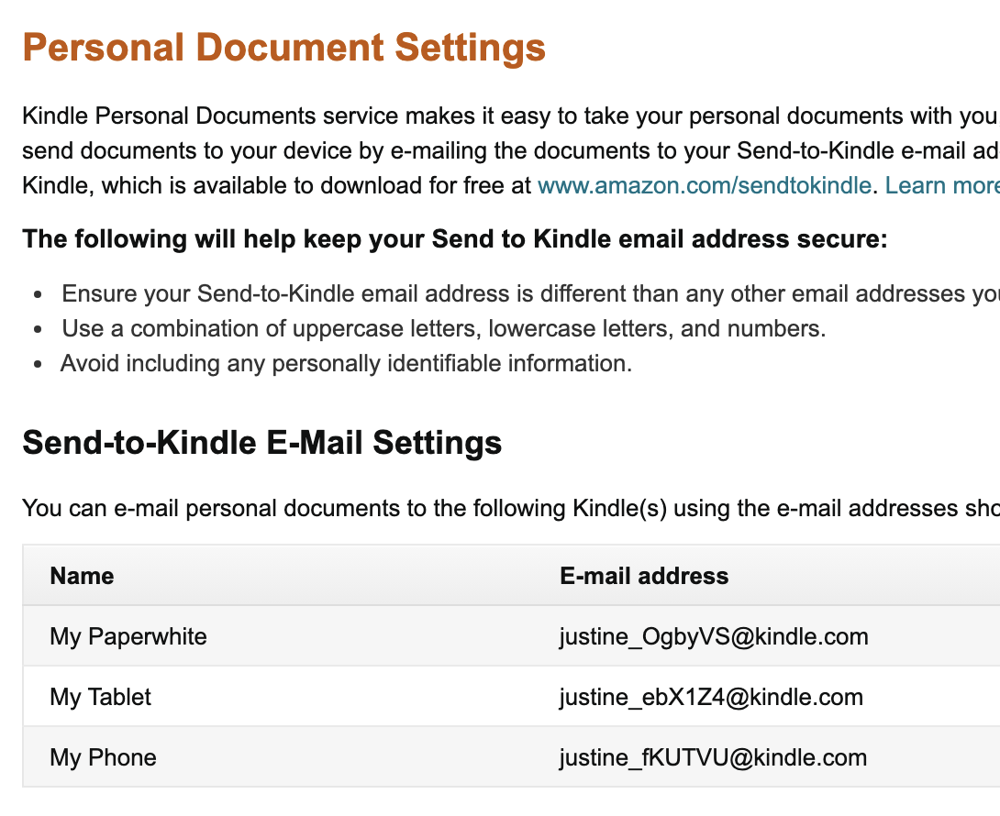
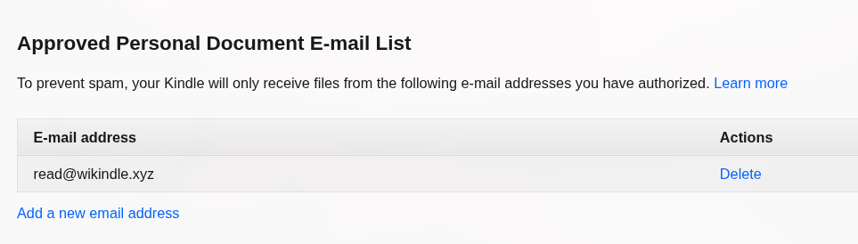

Setting up your Kindle
Two things live in the same Amazon settings page: the address your Kindle receives documents at, and the list of senders it will accept them from.
Open your Amazon settings
-
Go to the Preferences tab
Manage Your Content and Devices opens on Content. Everything you need is under Preferences.

-
Find your Send to Kindle address
Scroll down to Personal Document Settings. Under Send-to-Kindle E-Mail Settings you'll see one address per device. Pick whichever device you want to read on — they're different addresses, and each one delivers only to that device.

-
Let wikindle send to it
Still on the same page, find Approved Personal Document E-mail List, click Add a new email address, and add:
read@wikindle.xyz